League of Legends (LOL)
A League of Legends (rövidítve: LoL) valós idejű stratégiai játék, illetve online többjátékos csatamező, melyet a Warcraft III: The Frozen Thorne videójátékhoz készült Defense of the Ancients (röviden DotA) mod ihletett. A játék fejlesztője és egyben kiadója a Riot Games; Kínában a Tencent Holdings forgalmazza.
A játék bejelentésére 2008. október 7-én került sor; a zárt bétateszt 2009. április 10-én vette kezdetét és 2009. október 22-én ért véget. Ezután a tesztelés lehetősége mindenki számára elérhetővé vált. A játék végül 2009. október 27-én jelent meg.
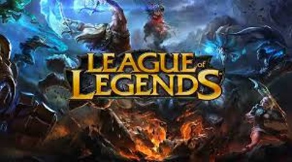 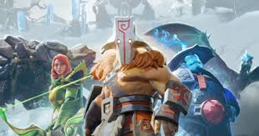
Játékmenet
Általános tudnivalók: A játékos regisztráció után az úgynevezett láthatatlan "Idéző" szerpébe bújik, aki egy egyedülálló mágikus képességekkel rendelkező hőst tud irányítani akinek célja, hogy csapattársai segítségével legyőzze az ellenfél csapatot. A három különböző pályán a játékosok két egyenlő, 3 illetve 5 fős csapatokra oszlanak, mindenki egy általa vagy véletlenszerűen választott hőst irányítva. A csapatok a térkép két átellenes pontján kezdenek egy Érkező Medence (Spawn Pool) nevű helyen, a Nexus (főközpont, szó szerint: összeköttetés) mellett. Az ellenfél Nexusának elpusztításával lehet megnyerni a játékot, vagy ha az ellenfél csapata feladja.
A hősök a játék során folyamatosan tapasztalatot és aranyat gyűjtenek, ellenséges lények (hősök és minionok) illetve semleges szörnyetegek legyilkolásával, valamint tornyok és inhibitorok lerombolásával. Az aranyból különféle tárgyakat vehetnek, amelyek fokozzák a hatékonyságukat, képességeik erejét, vagy éppen védelmet adnak. Első szinten kezdenek és a 18. szintig fejlődhetnek minden játék alkalmával, míg az Idézői szint, folyamatosan növekszik.
Az Igazság Mezeje
Jelenleg 2 állandó játékmód létezik a játékban , mely 2 különböző térképen zajlik. (játékbeli nevük Field of Justice, azaz Igazság Mezeje):
Idézők Szurdoka: a klasszikus pálya, melyen három ösvény (top-felső, mid-középső és bot-alsó) van, ezeket a dzsungel választja el egymástól. Két 5 fős csapat küzd egymás ellen, hogy a másik csapat Nexusát lerombolják, vagy feladásra kényszerítsék őket. Ezen a térképen található Baron Nashor, a Szurdok Hírnöke, valamint a Sárkány.
Ordító Szakadék: a 2013 április végén megjelent (Aram) térkép egy hidat foglal magába, azaz egyetlen úttal rendelkezik, ahol a játékosok véletlenszerűen kisorsolt hőssel játszhatnak, szintén 5 vs 5. Ha nem azzal a hőssel szeretnének játszani 2 újrapörgetési, azaz reroll lehetőségük van, ekkor egy új, szintén véletlenszerűen kisorsolt hőst kapnak. Ezt a lehetőséget az Ordító Szakadékon játszott mérkőzésekkel lehet szerezni. A másik lehetőségük a játékosoknak, hogy cserélnek csapattársukkal, amennyiben meg van mindkettőjüknek ugyanaz a hős, és a kért játékos is beleegyezik a cserébe. Elődje a Proving Grounds pálya volt, melyen szintén hídon folytak a harcok, így szintén egy útvonallal rendelkezett, csak más kinézettel. Maradványai még mindig láthatóak a térkép „tetején”.
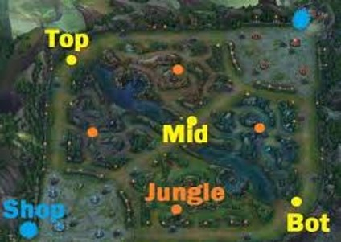
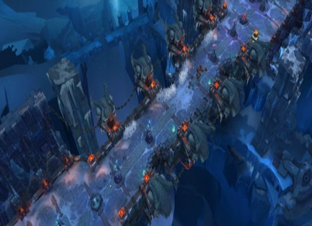
A hősök
Jelenleg 150 hős áll rendelkezésre, melyek közül a legutóbbi Samira. A hősök a játék világában olyan nagy hatalmú egyének, különbözőféle hatalmi forrásokkal, akiket/amiket az Idéző (a játékos) idéz meg és irányít. Ezek a hősök egyedi képességekkel és játékstílussal rendelkeznek, de beoszthatók 6 kategóriába:
Orgyilkos: középszintű támadó- és védekezőképességgel rendelkeznek. Lényegük az, hogy magas prioritású, alacsony életerejű célpontokat gyorsan tudjanak megsemmisíteni. Általában van valamilyen "utazó" képességük, mellyel gyorsan tudnak helyet változtatni, akár támadás, akár menekülés céljából. Könnyen végeznek a Támogató, Mágus és Lövész karakterekkel.
Harcos (vagy Off-Tank): erős támadóerővel és védekezéssel rendelkeznek, viszont általában lassúak. A Harcosok alapértékei igen magasak, ezért a játék elején kulcsfontosságú a szerepük. A játék végében viszont érdemesebb, úgymond "rásegítésre" vagy védekezésre használni őket. A Harcosok bármilyen szerepet fölvehetnek
Mágus: főleg távolsági karakterek, nagyon erős támadóerővel, de nagyon gyenge védekezéssel és alaptámadással. Céljuk, hogy távolról és területre, vagy több játékosra sebezzen. Gyakran CC-vel (crowd control effect) rendelkeznek, melyek rövid távon negatív hatással vannak az ellenfél küzdőképességére. Ezekkel irányítható a játék menete is. Érdemes velük a háttérből irányítani, mivel erejük miatt magas szintű célpontok és gyorsan megölhetők.
Lövész (vagy ADC vagy Carry): távolsági karakterek, melyeknek alaptámadása gyors és erős. Leggyakrabban rendelkeznek olyan képességekkel, amikkel saját értékeiket (támadási sebesség, mozgási sebesség stb.) erősíteni, növelni tudják. Mivel ők képesek kiosztani a legnagyobb sebzést a legrövidebb idő alatt, ezért kulcsfontosságú karakterek, mind a saját, mind az ellenfél csapat számára. A játék elején és közepén folyamatos támogatásra szorulnak, így nem érdemes egyedül menni egy Lövész karakterrel.
Támogató: gyenge támadó- és védekező képességű karakterek. Céljuk, a csapattársak támogatása, gyógyítással, buffolással, előnyös helyzetek teremtésével vagy éppen a támadási lehetőségek elkerülésével. A Támogató nem öli meg a minionokat, de megfelelő eszközzel, vagy Mesterségekkel megfelelő mennyiségű aranyat gyűjthet a fejlődéshez.
Tank: extrém védekezőképességgel és viszonylag gyenge támadással rendelkeznek és minden Tank rendelkezik valamilyen tömegirányító hatással. Lényegük, hogy megvédjék a gyengébb karaktereket, fölfogják a támadásokat, így előnyhöz juttatva saját csapatát. Nem ritka, hogy a Tank (akár a Támogató) teljesen föláldozza magát, amíg a csapattársak megölik a fontos ellenfeleket.
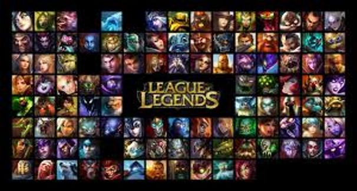
Erőforrások
A játék jelenleg többféle erőforrást tartalmaz, valamint különféle módszereket a képességhasználat korlátozására. Egy hős maximum egy erőforrással rendelkezik.
Mana: a legáltalánosabb erőforrás, a legtöbb hős manát (mágikus energiát) használ a képességeihez. A maximális értéke és a visszatöltődés sebessége is növekszik szintlépéskor, illetve tárgyakkal vagy fogyaszthatókkal is fokozható. A játékban kék színnel jelölik.
Energia: négy nindzsa (Akali, Kennen, Shen, Zed) és egy szerzetes által (Lee Sin) használt erőforrás. Jellemzője, hogy a maximális alapértéke rögzített (200), valamint a visszatöltődés sebessége is kevésbé befolyásolható, viszont alapvetően gyors. Ez azt eredményezi, hogy az erőforrás a manával ellentétben hosszú távon nem fogy el, viszont rövidtávon a képességek túlzott használatával könnyen kimerülhet. És amiért újradolgoztak pár rúnát ezért a maximum energia 250-re lehet húzni.
Düh/Vadság: ez az erőforrás nulláról indul, nagyrészt alaptámadásokkal növekszik, és a képességek használatát erősíti, és röviddel a harc befejezése után folyamatosan fogy. Maximum értéke 100, illetve 5. Jelenleg 5 hős, Tryndamere, Renekton, Shyvana, Gnar és Rek'Sai használja a Dühöt képességeik erősítésére, míg Rengar a Vadságot használja fel erőforrásként. A Düh piros, a Vadság narancssárga színnel van jelölve.
Hő: jelenleg egy hős használja, (Rumble) a mechanikus gépezetének a túlmelegedését mérve ezzel. Minden képességhasználattal növekszik, bizonyos határ felett erősíti a képességeit, valamint ha eléri a maximumot akkor a túlmelegedett gép kihűlésig nem tud több képességet használni. Képességhasználat nélkül folyamatosan hűl a gép, fogyasztva az erőforrást.
Élet: öt karakter a saját életerejéből veszít, amikor bizonyos képességeket használ. Ezeknél a karaktereknél az élet visszatöltése megoldott, így általában nem áll fent az a veszély, hogy "túlhasználja" a képességeit az adott karakter (Pl.: Zac).
Semmi: vannak olyan karakterek is, amelyeket csupán a töltési idő korlátoz képességeik használatában. Illetve vannak hősök akik ezt az erőforrást a passzív képességükkel felhasználják (Pl.: Yasuo).
Eszközök
Ezek olyan tárgyak, melyek nagyban módosítják az adott karakter állapotát és növelik teljesítményét (két kivétel ez alól a Vadászpenge (Hunter's Machete) és a Lélekkő (Spirit Stone) melyek nem adnak hozzá a karakter statisztikájához). Jelenleg 6+1 tárgyat hordhat magával minden hős, így ezek összeválogatása kulcsfontosságú a játékmenet tekintetében. Ezeket kizárólag a boltban lehet megvenni, a Kezdő Medencétől nem messze. Ez alól kivétel az Ordító Szakadék, mivel itt csak bizonyos feltételek mellett lehet vásárolni. A boltban az eszközöket el is lehet adni, amiért a teljes ár 70%-át kapjuk vissza. Kivételt képeznek a Kutató- és Doran tárgyak, azok, amiknek arany bevételük van, a fogyaszthatók és az Őrangyal (Guardian Angel), melyek után az értékük 40%-a jár vissza. Azok a tárgyak, amik egyedi passzív képességekkel rendelkeznek, nem halmozhatók más, azonos nevű passzív képességekkel. A tárgyak csoportokra oszthatók használatuk szerint: támadó, védekező, varázserőt növelő, talizmánok, illetve egyéb tárgyak, mely csoportba a fogyaszthatók is beletartoznak. Vannak olyan tárgyak is, amik kizárólag közelharci (Vérszomjas hidra (Ravenous Hydra), Húsevő (Flesheater)), vagy távolsági (Runaan hurrikánja (Runaan's Hurricane)) bajnokok számára használható, ezen felül olyanok is vannak, melyek kizárólag bizonyos bajnokok által használhatók (Kalista - Fekete lándzsa (The Black Spear), Viktor - A Hex agy (The Hex Core)). Külön említést érdemelnek a támogatók számára készített tárgyak, amiknek egyedi képességeik segítségével a csapattársakat támogathatják, akár pajzsolással (A hegy arca (Face of the Mountain)), akár saját maguk erősítésével, pl. plusz arany bevétellel (A felemelkedés talizmánja (Talisman of Ascension)) vagy éppen mindkettővel (pl. a pajzs pusztításával a támogató kap aranyat - Bizalomgömb (Globe of Trust)).
Minionok
A minionok feláldozható lények, amik automatikusan generálódnak a Nexusban, azzal a céllal, hogy az előre kiválasztott ösvényen haladva folyamatosan törjenek előre. Az első hullám a játék kezdete után másfél perccel indul, mind a kék, mind a piros csapat oldaláról, ezután 30 másodpercenként új hullámban jönnek és 3 percenként minden új minion erősödik. A tornyok felé 50%-kal többet, míg a hősök felé 15%-kal kevesebbet sebeznek. Fontos, hogy a minionok nem összetévesztendők a dzsungelben lévő semleges szörnyekkel. A minionok 'lelketlen háborús gépezetek' így nem éreznek, nem gondolkodnak. Mégis, csak bizonyos esetekben fognak támadni. Jelenleg négy fajtájuk van:
Közelharci: a legközelebbi ellenséges egységet támadják, erősebb védekezéssel rendelkeznek.
Távolsági: 600 egységnyi távolságban támadnak. Elenyészően, de magasabb DPS-sel (damage per second) rendelkeznek, viszont gyengébbek is.
Ostromminion: minden harmadik hullámban jön egy. Erősebb a többi minionnál és 30%-kal kevesebb sebzést szenvednek a tornyoktól.
Nexustörő: csak azon az ösvényen erednek, ahol az ellenséges inhibitort már elpusztították. Minden hullámmal folyamatosan jönnek az nexustörő leváltva, amíg az inhibitor visszaáll (ami négy perc). Az összes többi minionnál több életpontja és sebzése van, sokkal nehezebb is legyőzni egy ilyet.
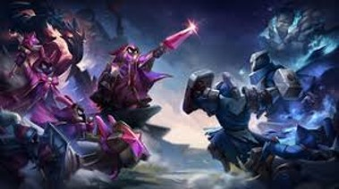
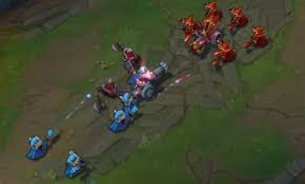
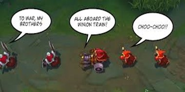
Rúnák
A Rúnák olyan erősítések, melyeket az Idéző azelőtt szerez be és állít össze, mielőtt hősével az Igazság Mezejére lépne. A rúnákon belül 5 fajta típust különböztetünk meg. Mindegyiken belül vannak fő rúnák, ezek közül egyet lehet választani az elsődleges rúnához. Mind az 5 rúna típusban van 3 sor sima rúna, minden sorban 3 rúna van azaz összesen 9 rúna van egy rúna típusban. Egy rúna sorból egy rúnát lehet kiválasztani (Így 4 rúna lesz az elsődleges rúna fából).Másodlagos rúna választása kor a maradék 4 rúna típus közül választhatunk. Itt nem választhatunk fő rúnát és csak 2 sorból választhatunk nem 3-ból (Így 2 rúna lesz a másodlagos rúna fából). A játék 5 rúnatípust ajánl fel, de bizonyos hősök számára más elsődleges-másodlagos rúna kombinációk lehetnek előnyösebbek, ezért a játékosok kettő saját rúna-listát is összeállíthatnak, az alapértelmezetteken kívül. Van 3 sor flex rúna is ami függ az adott matchtől.
Típusok (előre beállított)
Boszorkányság = felerősített képességek és erőforrás-manipuláció; másodlagos rúna: Uralom
Elszántság = szívósság és tömegirányítás; másodlagos rúna: Boszorkányság
Ihlet = kreatív eszközök és a szabályok megkerülése; másodlagos rúna: Elszántság
Precizitás = erősebb támadások és folyamatos sebzés; másodlagos rúna: Boszorkányság
Uralom = hirtelen sebzés és hozzáférés a célpontokhoz; másodlagos rúna: Precizitás
Intelés
Az intelés a játékban rendszeresen felbukkanó folyamat, mely során egy adott játékos szándékosan, csapatának kárt okozva direkt meghal, hogy ezáltal az ellenfél csapata előnyhöz jusson. A szó eredetileg Tyler1 amerikai streamerhez köthető, aki egy listát készített azokról a csapattársairól, akiknél ilyen viselkedést tapasztalt. Az intelés számos problémát okoz az ilyen viselkedést tanúsító játékos társai számára, azonban a League of Legends gyártója, a Riot Games még nem lépett fel a hasonló esetek ellen.
Épületek
Torony: célja a védelem, a minionhullámok lassítása. Minden lövéssel 37%-kal növekszik a sebzésük, így nem érdemes sokáig célpont maradni. Mikor elérte a maximális sebzési bónuszt (75%), +25%-kal többet sebez. A szövetséges tornyok közelében a láthatatlan ellenséges egységek láthatóvá, így támadhatóvá válnak. A külső tornyok életereje 4000 pont, a belső tornyoké 4000 pont, az inhibitor tornyok 4000 ponttal és élet-regenerálódással, a nexus tornyok 2500 ponttal és szintén élet-regenerálódással rendelkeznek.
Inhibitor: meggátolja, hogy az ellenfél oldalán Szuperminionok induljanak el. Az inhibitorok nem sebeznek, bár a hősök, csak alapsebzésük 85%-át tudják kiosztani, plusz a bónusz fizikai sebzést, vagy a varázserő 40%-át, attól függ, melyik a magasabb. 4000 életponttal rendelkeznek és az elpusztítás után négy perccel újra üzemkészek. Mikor a bemondó figyelmeztet, hogy az inhibitor hamarosan visszaáll, onnantól kezdve 15 másodperc múlva felépül.
Nexus: ez indítja el a minionokat az útjukra, valamint a Nexus tartja fent a kapcsolatot az Idéző és hőse között. Tehát, amikor a Nexus elpusztul, a kapcsolat megszakad és a játék véget ér. 5500 élettel és 25 élet-regenerációval rendelkezik.
Nexus Obeliszk: az érkező medence sarkában található torony, ami célozhatatlan. A hatótávján belül (ami maga a medence) 1000 sebzést oszt ki 0,5 másodperc alatt. Ez semmilyen páncéllal, varázsellenállással vagy képességgel nem védhető.
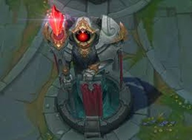
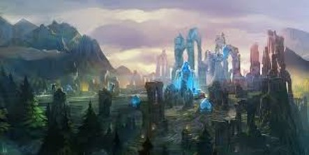
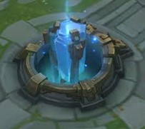
A játék mint e-sport�
A 2010-es Los Angeles-i World Cyber Games Grand Finals tartott egy League of Legends bajnokságot. Hétezer dolláros nyereményért küzdöttek a csapatok a Föld minden tájáról, a győztes a Counter Logic Gaming észak-amerikai csapat lett.
Az első évad lezárásaként megrendezett bajnokságnak a Dreamhack svéd rendezvény adott otthont, 2011 júniusában. A százezer dollár összdíjazású bajnokságot az európai Fnatic csapat nyerte. A meccsek nézettsége rekordokat döntött, a legmagasabb mért érték több mint kétszázezer néző volt és összesen több mint 1.6 millió nézője volt a bajnokságnak.
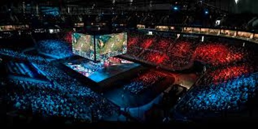